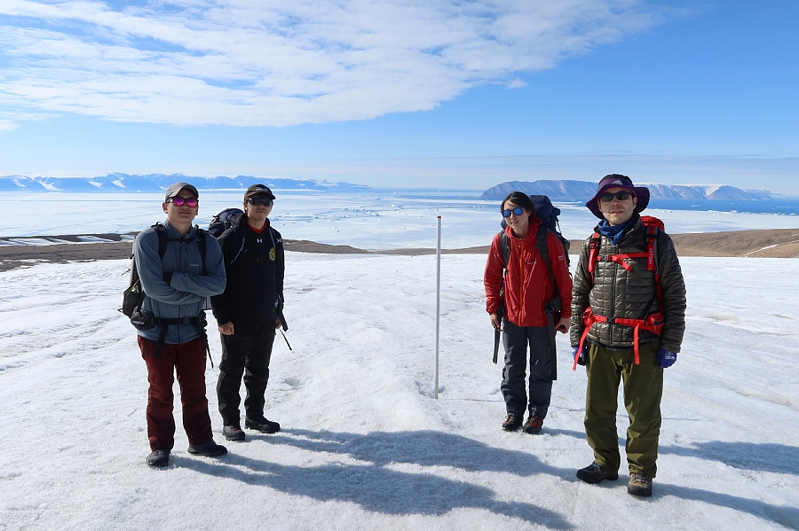

This is a HP of glacier and Ice sheet research group.Our research consists of a wide range of topics, including glacier dynamics and climate change.
Using methods are e.g. ice sheet modeling, remote sensing, photogrammetry, field observations, and ice core drilling and analyses.
Field sites are glaciers in Antarctica, Greenland, Patagonia and Kamuchatka.
NEWS 最近の出来事
2023/08/26 ~ 09/09
Swiss Alps Glacier Field Course

2023/09/03 ~ 09/07
Joint Conference on Snow and Ice

2023/07/05 ~ 08/16
Field research at Qaanaaq Glacier

INFORMATION グループからのお知らせ
2023/09/26
Field Research Around Qaanaaq Coast, Northwestern Greenland 2023
We conducted multiple measurements round Qaanaaq Coast, Northwestern Greenland from July to September, 2023. The reports are available from the links below.
Workshop in Qaanaaq, Northwest Greenland (August 3, 2023)（2023/9/14）New!
Field observations at Qaanaaq Glacier and its outlet stream in northwestern Greenland（2023/9/6）

REPORTS 過去の活動報告はこちら